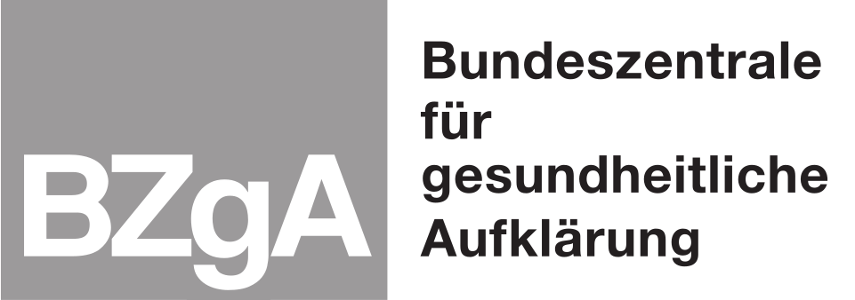

Stadtplanerische Prozesse beziehen heutzutage mehr und mehr auch Bürger:Innen aktiv mit ein.
Solch partizipativen Ansätze stärken im Regelfall die Akzeptanz und Umsetzbarkeit der Planungen,
da Anregungen und Einwände der Bürger:Innen berücksichtigt werden können. Dabei können
verschiedenste Partizipationsverfahren verwendet werden, von analogen Versammlungen über
digitale Fragebögen bis hin zu integrierten Softwaresystemen (Auskunftssysteme oder
Bürgerportale), die neben einem fachlichen Informationscharakter auch Feedback-Schnittstellen
anbieten.
Zielgruppe von DiKomAll bilden hierbei Menschen mit sogenannter geistiger Behinderung, die tlw.
zudem eine Seh- oder Hörbeeinträchtigung oder motorische Einschränkungen haben. Im Gegensatz zu
artikulationsstarken Gruppen müssen hierbei für analoge und digitale Partizipationsverfahren
besondere Grundvoraussetzungen geschaffen werden. Zugangsbarrieren müssen dabei identifiziert
und abgebaut werden. Planungsprozesse mit Öffentlichkeitsbeteiligung sollten hierbei auf die
Nutzung einfacher Sprache hin optimiert werden, um die teils komplexen Zusammenhänge
verständlich aufzubereiten.
Anforderungen an digitale Anwendungen wie KomMonitor sind umfangreicher. Da sie via Internet
prinzipiell allen Menschen zur Verfügung stehen und planungsrelevante Inhalte interaktiv
visualisieren, bieten sie ein hohes Potenzial zur Ansprache und Mobilisierung
unterschiedlichster Nutzergruppen. Um Personen mit geistiger Behinderung als Zielgruppe zu
empowern, müssen digitale Anwendungen um einfache Sprache und vor allen barrieresensible
Nutzerschnittstellen erweitert und für den Einsatz in Partizipationsprozessen optimiert werden.
Als Fachbeispiele dienen die pflichtige Lärmaktionsplanung und der innovative Fachplan
Gesundheit.
Das Team
-
Köpfe des Teams
Footer - Förderlogos etc.